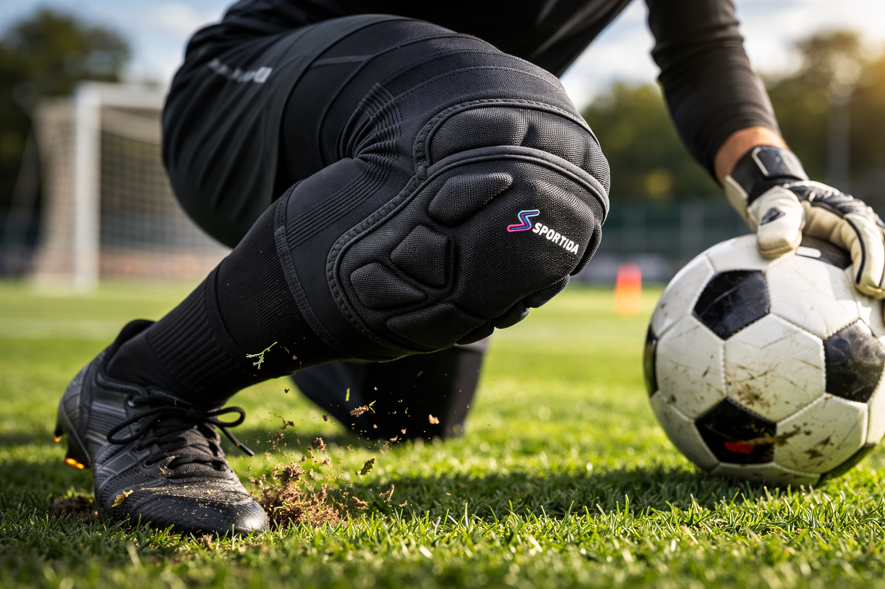

The Real Problem
Repeated drops, knee contact, and sudden changes in direction create impact every session. One hit may feel manageable, but dozens over time are different.
Turf, court, and mat surfaces add friction on top of impact. That means the knee is exposed to both direct pressure and surface abrasion in the same movement.
Over weeks of training, this accumulation often turns into soreness, sensitivity, and reduced confidence in drills that require aggressive movement.
Why Traditional Knee Pads Fail
Traditional models are often too bulky or too minimal. Bulky pads can feel heavy and restrictive, while minimal pads may not absorb enough force in repeated contact.
Stacking layers does not fully solve the issue. More foam without smart structure can still concentrate pressure and interfere with natural knee flexion.
What Is Segmented Padding
A traditional pad typically uses one larger foam block. It protects, but it bends as a single unit and can resist natural movement.
Segmented padding uses multiple connected protective sections. Each section can flex independently, so the pad follows the knee more naturally through bending, dropping, and recovery.
In simple terms: one-piece padding prioritizes coverage, while segmented padding balances coverage with movement.
Segmented Structure in Practice

Why Segmented Padding Works
When design matches movement, protection becomes more consistent under real training conditions.
- Distributes impact across multiple zones instead of a single pressure point.
- Reduces pressure concentration during repeated contact with hard or abrasive surfaces.
- Improves movement by flexing with the knee instead of fighting against it.
Impact Reality on Turf

Real User Experience
"The padding does a great job without feeling bulky."
"They sit right in the middle, offering targeted protection."
"It bends naturally with your knee."
"Doesn't restrict movement."
What This Means in Training
In real sessions, the difference shows up over time. Repeated drops feel more manageable, sliding drills become more controlled, and long practices stay productive.
Instead of adjusting your movement around bulky protection, segmented design supports the way athletes actually train: dynamic, repetitive, and high-contact.
Built for Movement

Takeaway
Protection Where You Need It - Without Bulk
That is the core advantage of segmented knee padding: practical impact protection, targeted coverage, and mobility that holds up through real training demands.